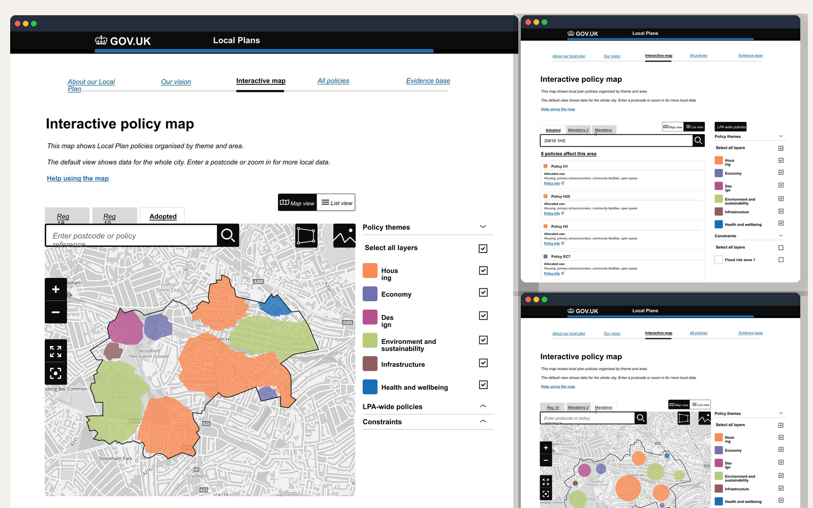
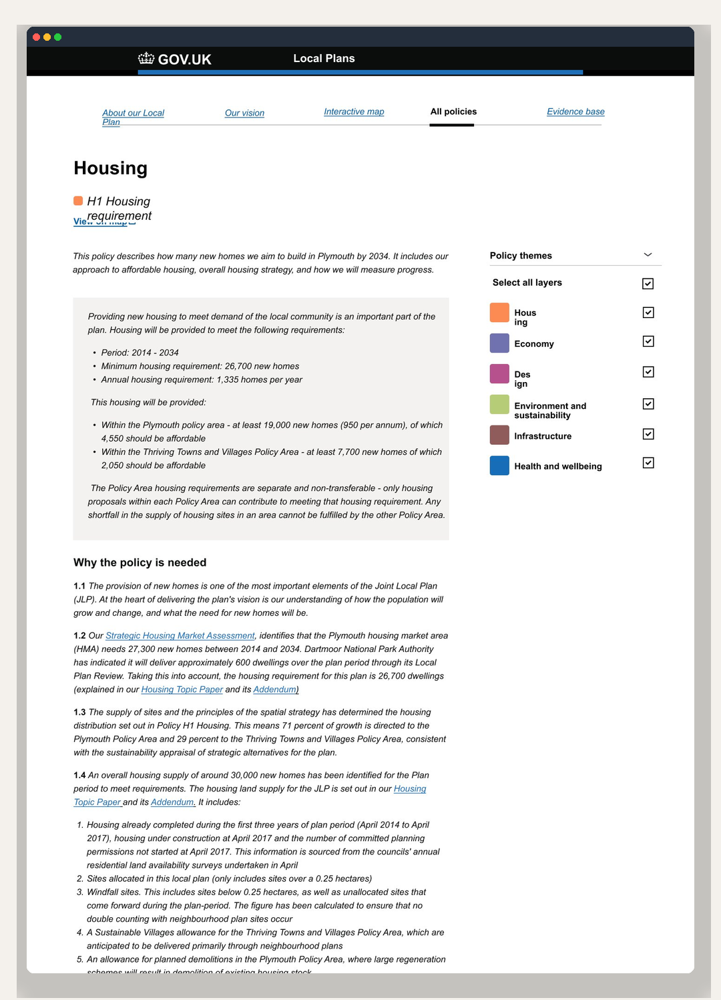
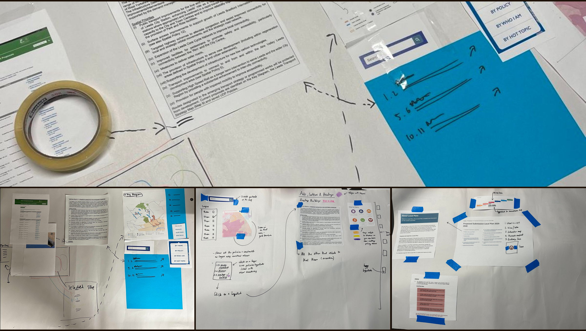

The work


From research to live product.

[ Hi-fi interactive policy map ]
[ Colour systems and guidance pages ]

[ Policy detail page ]

[ Co-design and ideation sessions ]
[ Map list view with postcode search ]
[ Reg 18 consultation view ]